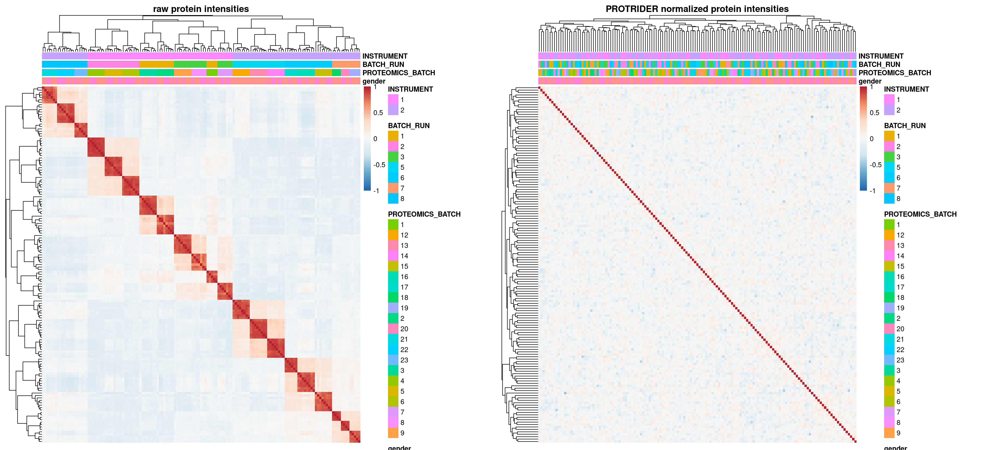

source('src/config.R')
library(ggplotify)
library(RColorBrewer)
# Read annotation
# sa <- fread('/s/project/mitoMultiOmics/multiOMICs_integration/processed_data/protrider/protrider_annotation.tsv') %>% as.data.frame()
sa <- fread(snakemake@input$protrider_annotation) %>% as.data.frame()
rownames(sa) <- sa$SAMPLE_ID
sa$PROTEOMICS_BATCH <- as.character(sa$PROTEOMICS_BATCH)
sa$BATCH_RUN <- as.character(sa$BATCH_RUN)
sa$INSTRUMENT <- as.character(sa$INSTRUMENT)
# load protrider summarized experiment
se <- readRDS(snakemake@input$protrider_object)
# se <- readRDS('/s/project/mitoMultiOmics/multiOMICs_integration/processed_data/protrider/protrider_obj.rds')
Fig_S5a <- as.ggplot(pheatmap(cor(assays(se)$X, use="complete.obs"),
main= 'raw protein intensities',
annotation_col = sa[ , c("gender", "PROTEOMICS_BATCH", "BATCH_RUN", "INSTRUMENT")],
breaks = seq(-1,1, length.out = 100),
na_col = "grey",
show_colnames = FALSE,
show_rownames = FALSE,
#legend = FALSE,
#annotation_legend = FALSE ,
color=colorRampPalette(rev(brewer.pal(n = 7, name = "RdBu")))(100)))
plot_matrix <- assays(se)$X - assays(se)$X_pred
Fig_S5b <- as.ggplot(pheatmap(cor(plot_matrix, use="complete.obs"),
annotation_col = sa[ , c("gender", "PROTEOMICS_BATCH", "BATCH_RUN", "INSTRUMENT")],
main= 'PROTRIDER normalized protein intensities',
breaks = seq(-1,1, length.out = 100),
na_col = "grey",
show_colnames = FALSE,
show_rownames = FALSE,
color=colorRampPalette(rev(brewer.pal(n = 7, name = "RdBu")))(100)))
Fig_S5ab <- Fig_S5a | Fig_S5b
Fig_S5ab

# figure: correlation structure between protein intensities of samples in mitochondrial disease cohort.
# Left: correlation matrix of the protein-wise centered log2-transformed raw intensities with a dendrogram which represents sample-wise hierarchical clustering.
# Known confounder effects (instrument, MS-run batch and gender) are displayed on the top.
# A strong positive correlation (red) is visible between samples of the same MS-run.
# Right: the correlation matrix for normalized intensities after PROTRIDER was applied and corrected for known and unknown confounder effects.
pdf(snakemake@output$fig, # "/s/project/mitoMultiOmics/multiOMICs_integration/Figures/Supplementary_figures/S_Fig5_ab.pdf",
width = 20, height = 9, useDingbats=FALSE )
print(Fig_S5ab)
dev.off()
## png
## 2
IyctLS0KIycgdGl0bGU6IFN1cHBsZW1lbnRhcnkgRmlnIDVhIFByb3RyaWRlciBkZW5vaXNpbmcgdmlzdWFsaXNhdGlvbgojJyBhdXRob3I6IGxvaXBmaW5zLCBzbWlybm92ZAojJyB3YjoKIycgIGlucHV0OgojJyAgLSBwcm90cmlkZXJfYW5ub3RhdGlvbjogJ2BzbSBjb25maWdbIlBST0NfREFUQSJdICsgIi9wcm90cmlkZXIvcHJvdHJpZGVyX2Fubm90YXRpb24udHN2ImAnCiMnICAtIHByb3RyaWRlcl9vYmplY3Q6ICdgc20gY29uZmlnWyJQUk9DX0RBVEEiXSArICIvcHJvdHJpZGVyL3Byb3RyaWRlcl9vYmoucmRzImAnCiMnICBvdXRwdXQ6CiMnICAtIGZpZzogJ2BzbSBjb25maWdbIkZJR1VSRV9ESVIiXSArICIvU3VwcGxlbWVudGFyeV9maWd1cmVzL1NfRmlnNV9hYi5wZGYiYCcKIycgb3V0cHV0OiAKIycgICBodG1sX2RvY3VtZW50OgojJyAgICBjb2RlX2ZvbGRpbmc6IGhpZGUKIycgICAgY29kZV9kb3dubG9hZDogVFJVRQojJy0tLQoKc291cmNlKCdzcmMvY29uZmlnLlInKQpsaWJyYXJ5KGdncGxvdGlmeSkKbGlicmFyeShSQ29sb3JCcmV3ZXIpCgojIFJlYWQgYW5ub3RhdGlvbgojIHNhIDwtIGZyZWFkKCcvcy9wcm9qZWN0L21pdG9NdWx0aU9taWNzL211bHRpT01JQ3NfaW50ZWdyYXRpb24vcHJvY2Vzc2VkX2RhdGEvcHJvdHJpZGVyL3Byb3RyaWRlcl9hbm5vdGF0aW9uLnRzdicpICU+JSBhcy5kYXRhLmZyYW1lKCkKc2EgPC0gZnJlYWQoc25ha2VtYWtlQGlucHV0JHByb3RyaWRlcl9hbm5vdGF0aW9uKSAlPiUgYXMuZGF0YS5mcmFtZSgpCnJvd25hbWVzKHNhKSA8LSBzYSRTQU1QTEVfSUQKc2EkUFJPVEVPTUlDU19CQVRDSCA8LSBhcy5jaGFyYWN0ZXIoc2EkUFJPVEVPTUlDU19CQVRDSCkKc2EkQkFUQ0hfUlVOIDwtIGFzLmNoYXJhY3RlcihzYSRCQVRDSF9SVU4pCnNhJElOU1RSVU1FTlQgPC0gYXMuY2hhcmFjdGVyKHNhJElOU1RSVU1FTlQpCgoKCiMgbG9hZCBwcm90cmlkZXIgc3VtbWFyaXplZCBleHBlcmltZW50CnNlIDwtIHJlYWRSRFMoc25ha2VtYWtlQGlucHV0JHByb3RyaWRlcl9vYmplY3QpCiMgc2UgPC0gcmVhZFJEUygnL3MvcHJvamVjdC9taXRvTXVsdGlPbWljcy9tdWx0aU9NSUNzX2ludGVncmF0aW9uL3Byb2Nlc3NlZF9kYXRhL3Byb3RyaWRlci9wcm90cmlkZXJfb2JqLnJkcycpCgoKRmlnX1M1YSA8LSBhcy5nZ3Bsb3QocGhlYXRtYXAoY29yKGFzc2F5cyhzZSkkWCwgdXNlPSJjb21wbGV0ZS5vYnMiKSwgCiAgICAgICAgICAgICAgICAgICAgbWFpbj0gJ3JhdyBwcm90ZWluIGludGVuc2l0aWVzJywgCiAgICAgICAgICAgICAgICAgICAgYW5ub3RhdGlvbl9jb2wgPSBzYVsgLCBjKCJnZW5kZXIiLCAiUFJPVEVPTUlDU19CQVRDSCIsICJCQVRDSF9SVU4iLCAiSU5TVFJVTUVOVCIpXSwKICAgICAgICAgICAgICAgICAgICBicmVha3MgPSBzZXEoLTEsMSwgbGVuZ3RoLm91dCA9IDEwMCksCiAgICAgICAgICAgICAgICAgICAgbmFfY29sID0gImdyZXkiLAogICAgICAgICAgICAgICAgICAgIHNob3dfY29sbmFtZXMgICAgID0gRkFMU0UsCiAgICAgICAgICAgICAgICAgICAgc2hvd19yb3duYW1lcyAgICAgPSBGQUxTRSwKICAgICAgICAgICAgICAgICAgICAjbGVnZW5kID0gRkFMU0UsCiAgICAgICAgICAgICAgICAgICAgI2Fubm90YXRpb25fbGVnZW5kID0gRkFMU0UgLCAKICAgICAgICAgICAgICAgICAgICBjb2xvcj1jb2xvclJhbXBQYWxldHRlKHJldihicmV3ZXIucGFsKG4gPSA3LCBuYW1lID0gIlJkQnUiKSkpKDEwMCkpKQoKCnBsb3RfbWF0cml4IDwtIGFzc2F5cyhzZSkkWCAtIGFzc2F5cyhzZSkkWF9wcmVkCgpGaWdfUzViIDwtIGFzLmdncGxvdChwaGVhdG1hcChjb3IocGxvdF9tYXRyaXgsIHVzZT0iY29tcGxldGUub2JzIiksCiAgICAgICAgICAgICAgICAgICAgYW5ub3RhdGlvbl9jb2wgPSBzYVsgLCBjKCJnZW5kZXIiLCAiUFJPVEVPTUlDU19CQVRDSCIsICJCQVRDSF9SVU4iLCAiSU5TVFJVTUVOVCIpXSwKICAgICAgICAgICAgICAgICAgICBtYWluPSAnUFJPVFJJREVSIG5vcm1hbGl6ZWQgcHJvdGVpbiBpbnRlbnNpdGllcycsCiAgICAgICAgICAgICAgICAgICAgYnJlYWtzID0gc2VxKC0xLDEsIGxlbmd0aC5vdXQgPSAxMDApLAogICAgICAgICAgICAgICAgICAgIG5hX2NvbCA9ICJncmV5IiwKICAgICAgICAgICAgICAgICAgICBzaG93X2NvbG5hbWVzICAgICA9IEZBTFNFLAogICAgICAgICAgICAgICAgICAgIHNob3dfcm93bmFtZXMgICAgID0gRkFMU0UsCiAgICAgICAgICAgICAgICAgICAgY29sb3I9Y29sb3JSYW1wUGFsZXR0ZShyZXYoYnJld2VyLnBhbChuID0gNywgbmFtZSA9ICJSZEJ1IikpKSgxMDApKSkKCiMrIGZpZy53aWR0aD0yMCwgZmlnLmhlaWdodD05CkZpZ19TNWFiIDwtIEZpZ19TNWEgfCBGaWdfUzViCkZpZ19TNWFiCgoKCiMgZmlndXJlOiBjb3JyZWxhdGlvbiBzdHJ1Y3R1cmUgYmV0d2VlbiBwcm90ZWluIGludGVuc2l0aWVzIG9mIHNhbXBsZXMgaW4gbWl0b2Nob25kcmlhbCBkaXNlYXNlIGNvaG9ydC4gCiMgTGVmdDogY29ycmVsYXRpb24gbWF0cml4IG9mIHRoZSBwcm90ZWluLXdpc2UgY2VudGVyZWQgbG9nMi10cmFuc2Zvcm1lZCByYXcgaW50ZW5zaXRpZXMgd2l0aCBhIGRlbmRyb2dyYW0gd2hpY2ggcmVwcmVzZW50cyBzYW1wbGUtd2lzZSBoaWVyYXJjaGljYWwgY2x1c3RlcmluZy4KIyBLbm93biBjb25mb3VuZGVyIGVmZmVjdHMgKGluc3RydW1lbnQsIE1TLXJ1biBiYXRjaCBhbmQgZ2VuZGVyKSBhcmUgZGlzcGxheWVkIG9uIHRoZSB0b3AuCiMgQSBzdHJvbmcgcG9zaXRpdmUgY29ycmVsYXRpb24gKHJlZCkgaXMgdmlzaWJsZSBiZXR3ZWVuIHNhbXBsZXMgb2YgdGhlIHNhbWUgTVMtcnVuLiAKIyBSaWdodDogdGhlIGNvcnJlbGF0aW9uIG1hdHJpeCBmb3Igbm9ybWFsaXplZCBpbnRlbnNpdGllcyBhZnRlciBQUk9UUklERVIgd2FzIGFwcGxpZWQgYW5kIGNvcnJlY3RlZCBmb3Iga25vd24gYW5kIHVua25vd24gY29uZm91bmRlciBlZmZlY3RzLgoKCnBkZihzbmFrZW1ha2VAb3V0cHV0JGZpZywgIyAiL3MvcHJvamVjdC9taXRvTXVsdGlPbWljcy9tdWx0aU9NSUNzX2ludGVncmF0aW9uL0ZpZ3VyZXMvU3VwcGxlbWVudGFyeV9maWd1cmVzL1NfRmlnNV9hYi5wZGYiLCAgCiAgICB3aWR0aCA9IDIwLCBoZWlnaHQgPSA5LCAgdXNlRGluZ2JhdHM9RkFMU0UgKQpwcmludChGaWdfUzVhYikgCmRldi5vZmYoKQoK